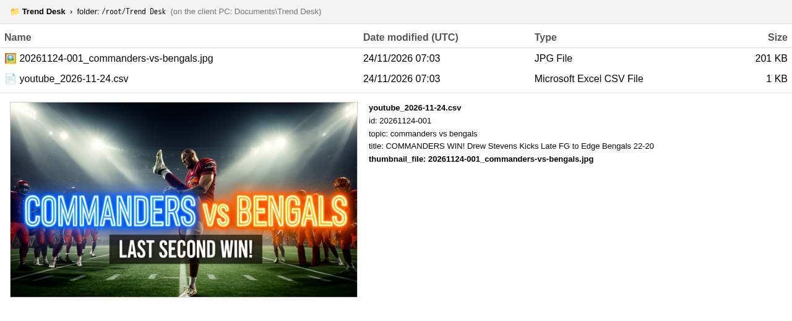

One real sample made in the Trend Desk desktop app. Pressing YouTube CSV (or Download files) saves each story's thumbnail as a JPG in the same folder as the CSV. On the client PC that folder is Documents\Trend Desk, or the folder picked in Settings.
File name = story ID + topic, e.g. 20261124-001_commanders-vs-bengals.jpg. The same name is in a new last column, thumbnail_file, in both CSVs.
